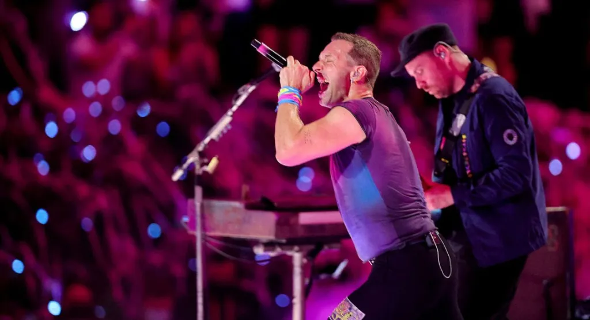
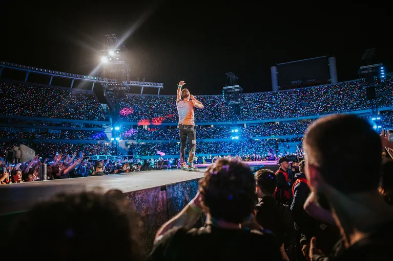
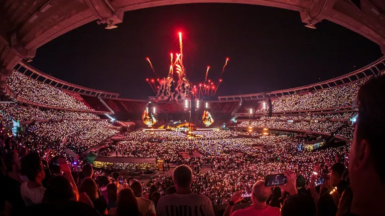
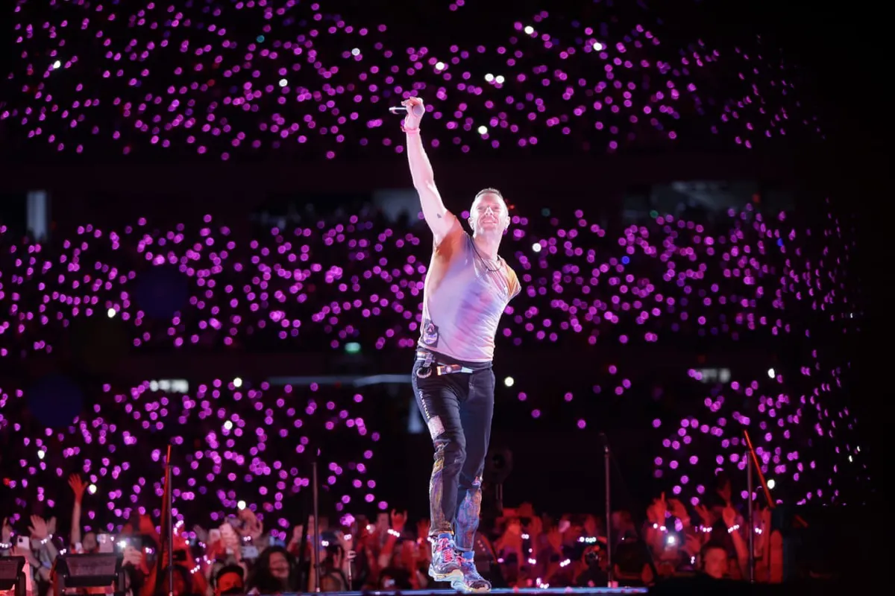

El producto es furor en los shows de la banda inglesa, que se presenta en el barrio de Núñez; la primera vez que usaron las luces de colores fue en 2011
El regreso de Coldplay a la Argentina después de seis años es furor. Más de 600 mil personas participarán de la presentación de la banda británica en alguna de sus diez funciones en el estadio de River Plate. Al ingresar, todos los espectadores al show reciben una pulsera LED de plástico después de cruzar el molinete que controla las entradas. Es la antesala que da pie a un despliegue de luces que se convirtió en uno de los eventos más comentados en el universo del espectáculo. La tecnología se conoce como Xylobands y fue creada por Jason Regler, un fanático de la banda.
Regler tuvo su primer encuentro con el grupo londinense gracias a una tormenta de nieve. El hombre tenía entradas para participar de un Meet and Greet con Coldplay en un recital en Newcastle, pero nunca pudo llegar por las adversas condiciones climáticas. Desolado, se puso en contacto con la organización. Para su sorpresa, recibió un mail del representante de la banda, Phil Harvey, quien lo invitó a participar de un ensayo de Coldplay. Ahí encontró el momento para presentarles su idea: una pulsera LED.
“En 2005, cuando vi a Coldplay en el festival de Glastonbury, venía de pasar unos días triste. Cuando los escuché tocar ‘Fix You’, sentí que nos unió a todos con la estrofa ‘Lights will guide you home’ (las luces te guiarán a casa, en inglés)”, explica Regler en el sitio oficial de Coldplay, donde detalla: “Así es como se me ocurrieron las pulseras” De esta manera, la idea, que según contó fue creada en particular para la banda británica, comenzó a crecer hasta convertirse en un hecho en 2011, en un recital en Madrid y sin ensayos. “Las pulseras llegaron a Madrid la mañana del show. Fue una noche de mucho miedo, pero al final todo funcionó”, recordó. Así se lanzaron a la primera gira con las Xylobands. ¿Cómo se produjeron? Junto a Coldplay, Regler ensambló un equipo para diseñar un prototipo que, después de algunas pruebas, fue enviado a China para ser fabricado de forma masiva.
Las pulseras de LED son controladas por un transmisor de radio. “Los transmisores que usamos para Coldplay tienen un alcance de 800 metros, lo cual es ideal para estadios y arenas”, señaló Regler en una entrevista a la revista Pulse. La tecnología central detrás de este producto es la radio frecuencia (RF) de baja potencia. Cada pulsera tiene luces LED que están controladas por un solo transmisor de RF ubicado en el centro cuyas emisiones de señal se coordinan con la música y la iluminación del escenario. El transmisor de RF transmite una señal de 60 kHz de ancho centrada en 869,5 MHz a una potencia de menos de 1 vatio, utilizando un esquema de modulación de modulación por cambio de frecuencia (FSK). La creación ya expandió su uso a otros conciertos, incluso a festejos privados. “Tenemos un controlador HTX que la gente contrata también para sus propios eventos personales”, remarcó el creador.
